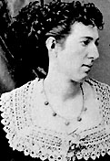

|

|

|
|
|
Born May 9, 1844 in Martinsburg, Virginia (now West
Virginia), Belle Boyd became one of the Confederacy's most
active and well-known female spies. Boyd's success as a spy
resulted, in part, from her ability to use her femininity to
escape detection and punishment. Called "La Belle Rebelle"
by the French press and "That Secesh Cleopatra" by
unfriendly Northern reporters, Boyd was bold, brash and
beautiful.
Boyd's parents, Mary Rebecca Glenn and Reed Boyd, both
came from prominent Virginia families. She received her
education at Mount Washington Female College of Baltimore,
Maryland. She returned home at the outbreak of the Civil
War, to serve as a nurse and to raise money for the
Confederacy. She also organized groups of women to visit
Southern troops. When a Northern soldier broke into her
house and insulted her mother in 1861, Boyd shot and killed
him. She escaped punishment because the shooting was seen as
self-defense. Approximately a week later, Boyd began her
career as a Confederate spy. To gather information, she
engaged Federal soldiers in flirtatious conversations. Any
information that they revealed concerning Union movements
and plans Boyd passed on to Confederate officials.
Generals P. G. T. Beauregard and Thomas "Stonewall"
Jackson used Boyd as a courier in late 1861. She
successfully carried information, supplies, and weapons
across enemy lines. Her role became vital in the spring of
1862, when Boyd delivered information to Jackson as he
launched an offensive in the Shenandoah Valley. For her
part in the Confederate successes in this campaign, Union
forces arrested Boyd on July 29, 1862 on the order of
Secretary of War Edwin Stanton. For the next month, they
held her in Washington's Old Capitol prison. In June 1863,
she was again arrested, this time in her home town of
Martinsburg, and imprisoned in Washington's Carroll Prison.
After contracting typhoid, Boyd was released in December
1863 and banished to the South.
Boyd did not wait long to resume her spying activities.
In early 1864, she boarded a ship for England presumably for
her health, but, in reality, she was on her way to deliver
Confederate dispatches. Before the mission could be carried
out, however, Union forces captured Boyd's ship, placed her
under arrest, and brought her ship back to the United
States. Boyd escaped from Federal custody in Boston and
fled to Canada and then to England. Union officials held
responsible Ensign Samuel Wylde Hardinge, Jr., the officer
in command of the captured ship. They court martialed and
imprisoned him. Before his case could be heard, Hardinage
followed Boyd to England where they married in 1864 and had
a daughter. He died soon after. From England, Boyd
published her memoirs, Belle Boyd in Camp and Prison
(1865), to recruit support for the Confederacy.
After the War, Boyd pursued a stage career, first in
Europe and then in the United States. She married two more
times and had four more children. In the 1880s, Boyd
lectured throughout the United States about her wartime
activities. At then end of each speech, she stressed the
importance of national unity and reunion. Boyd's speeches
proved particularly popular with Union veterans.
Belle Boyd died of a heart attack on June 11, 1900, while
in Kilbourne, Wisconsin.
Source: Joan Waugh, ed., Facts on File Encyclopedia of American
History: Civil War and Reconstruction, 1856 to 1869 (New York: Facts on
File, 2003), 34-35.
|